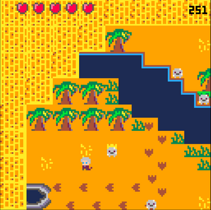
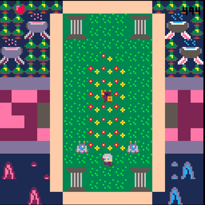

Time Mage Tournament (TMT)
Présentation
Time Mage Tournament est un jeu qui à été développé en seulement 24h dans le cadre de la Code Game Jam 2023 organisée par l'iut de Montpellier-Sète.
Ce jeu est un jeu de combat en 2D isometrique dans lequel le joueur incarne un mage ayant capacité d'arreter le temps qui doit affronter des monstres dans différentes arenes .
ce jeu a été développé en Lua avec le moteur de jeu Pico-8
Lien vers la page itch.io du jeu
Images
 Site de gestion des stages et alternances à l'IUT
Présentation
Ce site a été développé dans le cadre d'un projet de groupe de 2e année de BUT Informatique.
Il permet aux étudiants du departement de l'IUT de Montpellier-Sète de trouver des stages et des alternances en entreprise et de simplifier le systeme de convention actuel qui n'est pas ergonomique.
Il permet également aux entreprises de proposer des offres de stages et d'alternances aux étudiants de l'IUT.
Le responsable des stages de l'IUT peut également gérer les offres et les étudiants.
Ce site a été développé en PHP et est lié a une base de données MySql.